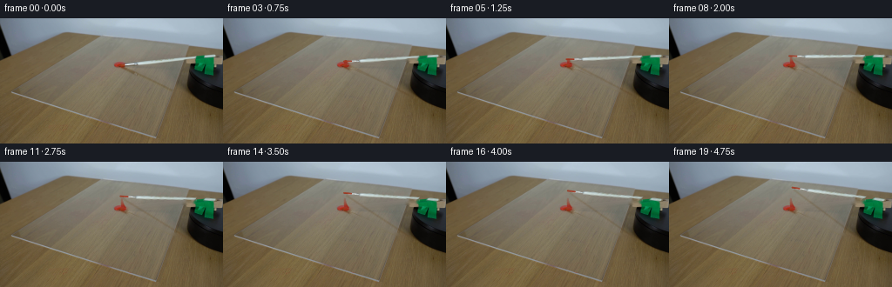
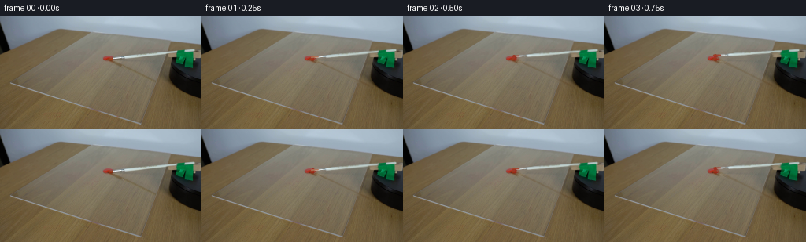

CODING AGENTS AS PIXEL WORLD MODELS
traex/GPT-6.1-Sol · 0132
点击播放 · 原生 RGB 像素
逐轮保存的候选
回放视频、检查图与代码变化。
每份候选均可单独播放。实际图片检查记录在下方工具轨迹中。
候选 01播放与检查图
点击播放 · 原生 RGB 像素


展开代码变化
--- 上一保存版本
+++ 本次保存版本
@@ -0,0 +1,143 @@
+from pathlib import Path
+import numpy as np
+from PIL import Image
+import cv2
+from scipy.ndimage import gaussian_filter
+import artifact_io
+
+ROOT = Path(__file__).resolve().parent
+W,H=256,144
+Y,X=np.mgrid[:H,:W].astype(np.float32)
+
+def prepare(im):
+ # The photographed table, sheet, drive and paint are retained, separating
+ # only the thin brush and its cast shadow.
+ shaft_y=67.85-.103*X
+ erase=((X>=144)&(X<=224)&(np.abs(Y-shaft_y)<3.35))
+ erase |= ((X>=234)&(X<=248)&(Y>=40)&(Y<=45))
+ bg=cv2.inpaint(im,erase.astype(np.uint8)*255,4,cv2.INPAINT_TELEA)
+ # Uncover the top of the stationary green spindle housing.
+ for y in range(40,46):
+ for x in range(234,249):
+ if x<=245:
+ if y<42:
+ bg[y,x]=im[39,x]
+ elif y==42:
+ a=np.clip((x-233)/8,0,1)*.5
+ bg[y,x]=np.round(im[39,x]*(1-a)+im[46,x]*a)
+ else:
+ a=min(1,(y-41)/2)
+ bg[y,x]=np.round(im[39,x]*(1-a)+im[46,x]*a)
+ else:
+ bg[y,x]=im[39,x]
+ # Remove only the slender diagonal cast shadow, not sheet boundaries.
+ shadow_y=56.7+.44*(X-140)
+ sh=((X>=145)&(X<=204)&(np.abs(Y-shadow_y)<2.6))
+ cleared=cv2.inpaint(bg,sh.astype(np.uint8)*255,3,cv2.INPAINT_TELEA)
+ # Feather into the original wood texture.
+ sh_alpha=np.clip((2.6-np.abs(Y-shadow_y))/1.1,0,1)*(X>=145)*(X<=204)
+ bg=np.round(bg*(1-sh_alpha[...,None])+cleared*sh_alpha[...,None]).astype(np.uint8)
+
+ diff=np.maximum(0,im.astype(float).mean(2)-bg.astype(float).mean(2))
+ allowed=((X>=143)&(X<=224)&(abs(Y-shaft_y)<3.2)) | ((X>=234)&(X<=247)&(Y>=40)&(Y<=45))
+ alpha=np.clip(diff/30.,0,1)*allowed
+ alpha[(X>=234)&(X<=247)&(Y>=42)&(Y<=44)] = np.clip(diff[(X>=234)&(X<=247)&(Y>=42)&(Y<=44)]/35,0,1)
+ # Colors are retained from the actual shaft, including ferrule reflections.
+ rgba=np.zeros((H,W,4),np.float32)
+ rgba[:,:,:3]=im.astype(np.float32)*alpha[:,:,None]
+ rgba[:,:,3]=alpha
+ return bg,rgba
+
+P=np.array([241.,43.])
+projection=np.array([[1.,-.28],[.14,.5]])
+projection_inv=np.linalg.inv(projection)
+
+def transform(angle):
+ t=np.deg2rad(angle)
+ R=np.array([[np.cos(t),-np.sin(t)],[np.sin(t),np.cos(t)]])
+ A=projection@R@projection_inv
+ return np.c_[A, P-A@P]
+
+def point(M,p):
+ return M[:,:2]@np.asarray(p)+M[:,2]
+
+def line_mask(points,width,scale=4):
+ canvas=np.zeros((H*scale,W*scale),np.uint8)
+ pts=np.round(np.asarray(points)*scale).astype(np.int32)
+ cv2.polylines(canvas,[pts],False,255,max(1,int(width*scale)),cv2.LINE_AA)
+ for p in [pts[0],pts[-1]]:
+ cv2.circle(canvas,tuple(p),max(1,int(width*scale/2)),255,-1,cv2.LINE_AA)
+ return cv2.resize(canvas,(W,H),interpolation=cv2.INTER_AREA).astype(float)/255
+
+
+def add_stroke(bg,angle):
+ # A short viscous paint wake is left on the sheet. It runs along the
+ # contact circle, remains on the acrylic, and thins as the paint runs out.
+ result=bg.astype(float).copy()
+ if angle<.3:return result
+ end=min(angle,12.5)
+ vals=np.linspace(0,end,max(2,int(end*8)+1))
+ coords=np.array([point(transform(a),[142.0,53.5]) for a in vals])
+ deposit=np.zeros((H,W),float)
+ for j in range(1,len(coords)):
+ a=(vals[j]+vals[j-1])/2
+ width=4.7*np.exp(-a/9)+.55
+ stroke=line_mask(coords[j-1:j+1],width)
+ opacity=.89*np.exp(-max(0,a-2)/8.0)
+ deposit=np.maximum(deposit,stroke*opacity)
+ # Preserve the thick central pile rather than painting over its texture.
+ pile=np.exp(-(((X-136.7)/5.1)**2+((Y-53)/2.2)**2)*1.6)
+ deposit*=1-.92*pile
+ grain=.7*np.sin(X*2.9+Y*.9)+.7*np.cos(Y*3.8-X)
+ red=np.stack([157+grain*3,40+grain*1.5,25+grain],axis=2)
+ result=result*(1-deposit[...,None])+red*deposit[...,None]
+ # A narrow broken wet specular glint follows the left edge of the smear.
+ highlight=line_mask(coords+np.array([-.4,-.3]),.4)*deposit*.17
+ result=result*(1-highlight[...,None])+np.array([226,127,101])*highlight[...,None]
+ return result
+
+
+def generate():
+ im=np.array(Image.open(ROOT/'first_frame.png').convert('RGB'))
+ bg,brush=prepare(im)
+ Image.fromarray(bg).save(ROOT/'.tmp/background.png')
+ frames=[im.copy()]
+ for i in range(1,20):
+ # Constant motor angular velocity. Clockwise in the tabletop plane.
+ angle=i*1.40
+ M=transform(angle)
+ canvas=add_stroke(bg,angle)
+ # Attached bristles: a small flat tapered bundle at the distal ferrule.
+ btip=point(M,[140.1,53.3]); ferrule=point(M,[148.2,52.65])
+ # Cast shadow on the tabletop is offset by the fixed oblique light.
+ tip=point(M,[143.0,53.2]); root=point(M,[236.,43.4])
+ shadow_points=[tip+np.array([.8,3.3]),root+np.array([-10.8,51.0])]
+ cast=line_mask(shadow_points,1.5)
+ cast=gaussian_filter(cast,.6)
+ cast *= np.clip((218-X)/9,0,1)
+ canvas*=1-cast[...,None]*np.array([.06,.105,.18])
+ # Warp the photographed shaft as a rigid rod in a foreshortened plane.
+ warped=cv2.warpAffine(brush,M.astype(np.float32),(W,H),flags=cv2.INTER_LINEAR,borderMode=cv2.BORDER_CONSTANT)
+ alpha=warped[:,:,3]
+ canvas=canvas*(1-alpha[...,None])+warped[:,:,:3]
+ # Sub-pixel tapered bristles, illuminated across their width.
+ bundle=line_mask([btip,ferrule],1.72)
+ wet=np.clip(angle/3,0,1)
+ color=np.array([187.,173.,135.])*(1-wet)+np.array([150.,48.,26.])*wet
+ # Outer bundle first; shaft remains in front of the root.
+ canvas=canvas*(1-bundle[...,None]*.92)+color*bundle[...,None]*.92
+ ridge=line_mask([btip+np.array([0,-.35]),ferrule+np.array([0,-.35])],.38)*.42
+ canvas=canvas*(1-ridge[...,None])+np.array([207,124,94])*ridge[...,None]
+ # Blend only the tiny separation residual over the first step.
+ if i==1:
+ original_zero=bg.astype(float)*(1-brush[:,:,3,None])+brush[:,:,:3]
+ residual=im.astype(float)-original_zero
+ locality=((X>143)&(X<225)&(abs(Y-(67.85-.103*X))<4))
+ canvas+=residual*locality[...,None]*.22
+ frames.append(np.clip(np.round(canvas),0,255).astype(np.uint8))
+ frames=np.stack(frames)
+ artifact_io.save(frames,ROOT)
+ return frames
+
+if __name__=='__main__':
+ generate()
可观测工具轨迹
实际执行的命令与返回图片。
命令 1exit 0
/bin/bash -lc 'ls -la; cat prompt.txt; cat GENERATION_RULES.md'
命令 2exit 0
/bin/bash -lc "cat artifact_io.py; python - <<'PY'
from PIL import Image
import numpy as np
im=np.array(Image.open('first_frame.png').convert('RGB'))
print('shape',im.shape)
print('palette')
from collections import Counter
print(Counter(map(tuple,im.reshape(-1,3))).most_common(15))
gray=np.mean(im,2)
chars='@%#*+=-:. '
for y in range(0,im.shape[0],2):
print(''.join(chars[min(9,int(v/256*10))] for v in gray[y,::2]))
PY"命令 3exit 0
/bin/bash -lc "python - <<'PY'
from PIL import Image
import numpy as np
im=np.array(Image.open('first_frame.png'))
# classify true colors
for y in range(0,144,2):
s=''
for x in range(0,256,2):
r,g,b=map(int,im[y,x,:3]); lum=(r+g+b)/3
if r>g*1.45 and r>b*1.4: c='R'
elif max(r,g,b)<35:c='#'
elif max(r,g,b)<65:c='D'
elif b>r*1.13 and b>g*1.01:c='B' if lum>140 else 'b'
elif min(r,g,b)>160:c='W'
elif max(r,g,b)-min(r,g,b)<25:c='s' if lum>110 else 'd'
elif r>g>b:c='t' if lum<120 else '.'
else:c='?'
s+=c
print(f'{y:03d} {s}')
print('red pixels bounds')
r,g,b=im[:,:,0].astype(float),im[:,:,1].astype(float),im[:,:,2].astype(float)
m=(r>g*1.45)&(r>b*1.4)&(r>80)
y,x=np.where(m);print(x.min(),x.max(),y.min(),y.max())
for yy in range(36,76):
print(f'{yy:03d}',end=' ')
for xx in range(100,256):
R,G,B=map(int,im[yy,xx,:3]); lum=(R+G+B)/3
if R>G*1.45 and R>B*1.4: c='R'
elif max(R,G,B)<35:c='#'
elif max(R,G,B)<65:c='D'
elif B>R*1.13 and B>G*1.01:c='B' if lum>140 else 'b'
elif min(R,G,B)>160:c='W'
elif max(R,G,B)-min(R,G,B)<25:c='s' if lum>110 else 'd'
elif R>G>B:c='t' if lum<120 else '.'
else:c='?'
print(c,end='')
print()
PY"命令 4exit 0
/bin/bash -lc "python - <<'PY'
from PIL import Image
import numpy as np
im=np.array(Image.open('first_frame.png'))
for y in [35,38,40,42,43,44,45,46,47,48,49,50,51,52,53,54,55,56,58,60,62,64,66,68]:
print('y',y,':',' '.join(f'{x}:{tuple(im[y,x])}' for x in range(130,256,5)))
print('\\nGrayscale crop:')
chars='@%#*+=-:. '
for y in range(36,76):
print(f'{y:02}', ''.join(chars[min(9,int(np.mean(im[y,x])/256*10))] for x in range(120,256)))
PY"命令 5exit 0
/bin/bash -lc "python - <<'PY'
from PIL import Image
import numpy as np
im=np.array(Image.open('first_frame.png'))
# white metal positions grouped
for y in range(39,57):
m=(im[y,:,0]>150)&(im[y,:,1]>155)&(im[y,:,2]>140)
inds=np.where(m&(np.arange(256)>125))[0]
print(y, [(a,bb) for a,bb in zip(inds[np.r_[True,np.diff(inds)>1]],inds[np.r_[np.diff(inds)>1,True]])] if len(inds) else [])
# high detail color ascii region
chars=''
for y in range(39,67):
s=''
for x in range(126,252):
r,g,b=map(int,im[y,x,:3]);lum=(r+g+b)/3
if r>g*1.45 and r>b*1.4: c='R'
elif g>r*1.4 and g>b*1.2:c='G' if g>90 else 'g'
elif max(r,g,b)<35:c='#'
elif max(r,g,b)<65:c='D'
elif min(r,g,b)>190:c='W'
elif min(r,g,b)>160:c='w'
elif b>r*1.04:c='S'
elif max(r,g,b)-min(r,g,b)<25:c='s' if lum>135 else '.'
elif r>g>b:c='t' if lum<120 else ':'
else:c='?'
s+=c
print(f'{y:03d} {s}')
PY"命令 6exit 0
/bin/bash -lc "python - <<'PY'
from PIL import Image
import numpy as np
im=np.array(Image.open('first_frame.png'))
for y in range(49,59):
print(y, ' '.join(f'{x}:{im[y,x,0]:03},{im[y,x,1]:03},{im[y,x,2]:03}' for x in range(127,148)))
PY"命令 7exit 0
/bin/bash -lc "python - <<'PY'
import numpy as np
from PIL import Image
im=np.array(Image.open('first_frame.png'))
for y in range(55,86):
a=im[y,140:213].mean(axis=1);x=140+np.argmin(a)
print(y,x,round(a.min(),1),'segments',''.join('#' if v<95 else '*' if v<108 else '.' for v in a))
import importlib.util
for name in ['cv2','scipy']:
print(name, bool(importlib.util.find_spec(name)))
PY"命令 8exit 0
/bin/bash -lc "python - <<'PY'
from PIL import Image
import numpy as np
im=np.array(Image.open('first_frame.png')).astype(float)
for x in [143,145,148,150,155,160,165,170,175,180,185,190,195,200,205,210,215,220,223,225,230,235,240,245,248]:
print(x, ' '.join(f'{y}:{im[y,x].mean():.0f}' for y in range(40,56)))
PY"命令 9exit 0
/bin/bash -lc "python - <<'PY'
import cv2,numpy as np
q=np.float32([[101,22],[215,35],[198,137],[15,86]])
for aspect in [1,1.3,1.8,2]:
H=cv2.getPerspectiveTransform(np.float32([[0,0],[aspect,0],[aspect,1],[0,1]]),q)
def trans(p,H):
v=H@np.r_[p,1];return v[:2]/v[2]
P=trans([235,43],np.linalg.inv(H)); B=trans([140,53],np.linalg.inv(H));v=B-P
print('aspect',aspect,'P',P,'v',v)
for ang in [0,5,10,20,30,45,60,80]:
t=np.deg2rad(ang);R=np.array([[np.cos(t),-np.sin(t)],[np.sin(t),np.cos(t)]])
print(ang,np.round(trans(P+R@v,H),1),end='; ')
print()
PY"命令 10exit 0
/bin/bash -lc "python - <<'PY'
import numpy as np
p=np.array([240,43]);tip=np.array([132,54])
for M in [np.array([[1,0],[.14,.45]]),np.array([[1,-.45],[.14,.5]]),np.array([[1,0],[0,.4]])]:
print('M',M)
v=np.linalg.solve(M,tip-p)
for a in [0,2,5,10,20,30,40,50,60]:
t=np.deg2rad(a); R=np.array([[np.cos(t),-np.sin(t)],[np.sin(t),np.cos(t)]])
print(a,np.round(p+M@R@v,1),end=';')
print()
PY"命令 11exit 0
/bin/bash -lc "python - <<'PY'
import cv2, numpy as np
from PIL import Image
im=np.array(Image.open('first_frame.png'))
# Determine old line darkening relative to adjacent table
for x in [145,150,160,170,180,190,200]:
y=int(round(56+(x-140)*.44)); val=im[y,x].astype(float);bg=(im[y-4,x].astype(float)+im[y+4,x].astype(float))/2
print(x,y,val,bg,np.round(val/bg,2))
PY"命令 12exit 0
/bin/bash -lc "python - <<'PY' import numpy as np p=np.array([240,43]);M=np.array([[1.,0],[.14,.45]]) for T in [(143,53),(141,53),(137,53)]: v=np.linalg.solve(M,np.array(T)-p); print(T) for a in [0,1,2,3,4,6,10,20,30,40]: a=np.deg2rad(a);r=np.array([[np.cos(a),-np.sin(a)],[np.sin(a),np.cos(a)]]) print(np.round(p+M@r@v,1),end=' ') print() PY"
命令 13exit 0
/bin/bash -lc "python - <<'PY'
import numpy as np
p=np.array([240,43]); v=np.array([140,53])-p
for M in [np.array([[1,-.28],[.14,.5]]),np.array([[1,-.4],[.12,.52]]),np.array([[1,-.25],[.12,.46]])]:
print('M',M)
for a in [0,2,5,10,15,20,25,30]:
t=np.deg2rad(a);R=np.array([[np.cos(t),-np.sin(t)],[np.sin(t),np.cos(t)]]); print(a,np.round(p+M@R@np.linalg.inv(M)@v,1),end=';')
print()
PY"命令 14exit 0
/bin/bash -lc "python - <<'PY'
import cv2,numpy as np
from PIL import Image
im=np.array(Image.open('first_frame.png'))
yy,xx=np.mgrid[:144,:256]
line=67.9-.103*xx
mask=((xx>=144)&(xx<=224)&(abs(yy-line)<3.3)).astype(np.uint8)*255
mask[40:46,235:248]=255
bg=cv2.inpaint(im,mask,4,cv2.INPAINT_TELEA)
for y in range(41,58):
print(y,' '.join(f'{x}:{tuple(bg[y,x])}' for x in [144,150,160,180,200,220,237,245]))
Image.fromarray(bg).save('.tmp/bg_candidate.png')
PY"命令 15exit 0
/bin/bash -lc "python - <<'PY' import numpy as np p=np.array([241.,43.]);M=np.array([[1,-.28],[.14,.5]]) for q in [[143,53],[137,53],[139,53]]: print(q) for a in [0,2,4,8,12,20,30]: t=np.deg2rad(a); R=np.array([[np.cos(t),-np.sin(t)],[np.sin(t),np.cos(t)]]) print(a,np.round(p+M@R@np.linalg.inv(M)@(q-p),1),end=';') print() PY"
命令 16exit 0
/bin/bash -lc "cat > generate.py <<'PY'
from pathlib import Path
import numpy as np
from PIL import Image
import cv2
from scipy.ndimage import gaussian_filter
import artifact_io
ROOT = Path(__file__).resolve().parent
W,H=256,144
Y,X=np.mgrid[:H,:W].astype(np.float32)
def prepare(im):
# The photographed table, sheet, drive and paint are retained, separating
# only the thin brush and its cast shadow.
shaft_y=67.85-.103*X
erase=((X>=144)&(X<=224)&(np.abs(Y-shaft_y)<3.35))
erase |= ((X>=234)&(X<=248)&(Y>=40)&(Y<=45))
bg=cv2.inpaint(im,erase.astype(np.uint8)*255,4,cv2.INPAINT_TELEA)
# Uncover the top of the stationary green spindle housing.
for y in range(40,46):
for x in range(234,249):
if x<=245:
if y<42:
bg[y,x]=im[39,x]
elif y==42:
a=np.clip((x-233)/8,0,1)*.5
bg[y,x]=np.round(im[39,x]*(1-a)+im[46,x]*a)
else:
a=min(1,(y-41)/2)
bg[y,x]=np.round(im[39,x]*(1-a)+im[46,x]*a)
else:
bg[y,x]=im[39,x]
# Remove only the slender diagonal cast shadow, not sheet boundaries.
shadow_y=56.7+.44*(X-140)
sh=((X>=145)&(X<=204)&(np.abs(Y-shadow_y)<2.6))
cleared=cv2.inpaint(bg,sh.astype(np.uint8)*255,3,cv2.INPAINT_TELEA)
# Feather into the original wood texture.
sh_alpha=np.clip((2.6-np.abs(Y-shadow_y))/1.1,0,1)*(X>=145)*(X<=204)
bg=np.round(bg*(1-sh_alpha[...,None])+cleared*sh_alpha[...,None]).astype(np.uint8)
diff=np.maximum(0,im.astype(float).mean(2)-bg.astype(float).mean(2))
allowed=((X>=143)&(X<=224)&(abs(Y-shaft_y)<3.2)) | ((X>=234)&(X<=247)&(Y>=40)&(Y<=45))
alpha=np.clip(diff/30.,0,1)*allowed
alpha[(X>=234)&(X<=247)&(Y>=42)&(Y<=44)] = np.clip(diff[(X>=234)&(X<=247)&(Y>=42)&(Y<=44)]/35,0,1)
# Colors are retained from the actual shaft, including ferrule reflections.
rgba=np.zeros((H,W,4),np.float32)
rgba[:,:,:3]=im.astype(np.float32)*alpha[:,:,None]
rgba[:,:,3]=alpha
return bg,rgba
P=np.array([241.,43.])
projection=np.array([[1.,-.28],[.14,.5]])
projection_inv=np.linalg.inv(projection)
def transform(angle):
t=np.deg2rad(angle)
R=np.array([[np.cos(t),-np.sin(t)],[np.sin(t),np.cos(t)]])
A=projection@R@projection_inv
return np.c_[A, P-A@P]
def point(M,p):
return M[:,:2]@np.asarray(p)+M[:,2]
def line_mask(points,width,scale=4):
canvas=np.zeros((H*scale,W*scale),np.uint8)
pts=np.round(np.asarray(points)*scale).astype(np.int32)
cv2.polylines(canvas,[pts],False,255,max(1,int(width*scale)),cv2.LINE_AA)
for p in [pts[0],pts[-1]]:
cv2.circle(canvas,tuple(p),max(1,int(width*scale/2)),255,-1,cv2.LINE_AA)
return cv2.resize(canvas,(W,H),interpolation=cv2.INTER_AREA).astype(float)/255
def add_stroke(bg,angle):
# A short viscous paint wake is left on the sheet. It runs along the
# contact circle, remains on the acrylic, and thins as the paint runs out.
result=bg.astype(float).copy()
if angle<.3:return result
end=min(angle,12.5)
vals=np.linspace(0,end,max(2,int(end*8)+1))
coords=np.array([point(transform(a),[142.0,53.5]) for a in vals])
deposit=np.zeros((H,W),float)
for j in range(1,len(coords)):
a=(vals[j]+vals[j-1])/2
width=4.7*np.exp(-a/9)+.55
stroke=line_mask(coords[j-1:j+1],width)
opacity=.89*np.exp(-max(0,a-2)/8.0)
deposit=np.maximum(deposit,stroke*opacity)
# Preserve the thick central pile rather than painting over its texture.
pile=np.exp(-(((X-136.7)/5.1)**2+((Y-53)/2.2)**2)*1.6)
deposit*=1-.92*pile
grain=.7*np.sin(X*2.9+Y*.9)+.7*np.cos(Y*3.8-X)
red=np.stack([157+grain*3,40+grain*1.5,25+grain],axis=2)
result=result*(1-deposit[...,None])+red*deposit[...,None]
# A narrow broken wet specular glint follows the left edge of the smear.
highlight=line_mask(coords+np.array([-.4,-.3]),.4)*deposit*.17
result=result*(1-highlight[...,None])+np.array([226,127,101])*highlight[...,None]
return result
def generate():
im=np.array(Image.open(ROOT/'first_frame.png').convert('RGB'))
bg,brush=prepare(im)
Image.fromarray(bg).save(ROOT/'.tmp/background.png')
frames=[im.copy()]
for i in range(1,20):
# Constant motor angular velocity. Clockwise in the tabletop plane.
angle=i*1.40
M=transform(angle)
canvas=add_stroke(bg,angle)
# Attached bristles: a small flat tapered bundle at the distal ferrule.
btip=point(M,[140.1,53.3]); ferrule=point(M,[148.2,52.65])
# Cast shadow on the tabletop is offset by the fixed oblique light.
tip=point(M,[143.0,53.2]); root=point(M,[236.,43.4])
shadow_points=[tip+np.array([.8,3.3]),root+np.array([-10.8,51.0])]
cast=line_mask(shadow_points,1.5)
cast=gaussian_filter(cast,.6)
cast *= np.clip((218-X)/9,0,1)
canvas*=1-cast[...,None]*np.array([.06,.105,.18])
# Warp the photographed shaft as a rigid rod in a foreshortened plane.
warped=cv2.warpAffine(brush,M.astype(np.float32),(W,H),flags=cv2.INTER_LINEAR,borderMode=cv2.BORDER_CONSTANT)
alpha=warped[:,:,3]
canvas=canvas*(1-alpha[...,None])+warped[:,:,:3]
# Sub-pixel tapered bristles, illuminated across their width.
bundle=line_mask([btip,ferrule],1.72)
wet=np.clip(angle/3,0,1)
color=np.array([187.,173.,135.])*(1-wet)+np.array([150.,48.,26.])*wet
# Outer bundle first; shaft remains in front of the root.
canvas=canvas*(1-bundle[...,None]*.92)+color*bundle[...,None]*.92
ridge=line_mask([btip+np.array([0,-.35]),ferrule+np.array([0,-.35])],.38)*.42
canvas=canvas*(1-ridge[...,None])+np.array([207,124,94])*ridge[...,None]
# Blend only the tiny separation residual over the first step.
if i==1:
original_zero=bg.astype(float)*(1-brush[:,:,3,None])+brush[:,:,:3]
residual=im.astype(float)-original_zero
locality=((X>143)&(X<225)&(abs(Y-(67.85-.103*X))<4))
canvas+=residual*locality[...,None]*.22
frames.append(np.clip(np.round(canvas),0,255).astype(np.uint8))
frames=np.stack(frames)
artifact_io.save(frames,ROOT)
return frames
if __name__=='__main__':
generate()
PY
python generate.py"命令 17exit 0
/bin/bash -lc "python - <<'PY'
from PIL import Image
import numpy as np
for frame in [0,1,4,8,14,19]:
im=np.array(Image.open(f'frames/{frame:02d}.png'))
print('\\nFrame',frame)
for y in range(24,57):
s=''
for x in range(122,251):
r,g,b=map(int,im[y,x]);lum=(r+g+b)/3
if r>g*1.45 and r>b*1.4: c='R'
elif g>r*1.4 and g>b*1.2:c='G' if g>90 else 'g'
elif max(r,g,b)<35:c='#'
elif max(r,g,b)<65:c='D'
elif min(r,g,b)>190:c='W'
elif min(r,g,b)>160:c='w'
elif b>r*1.04:c='S'
elif max(r,g,b)-min(r,g,b)<25:c='s' if lum>135 else '.'
elif r>g>b:c='t' if lum<120 else ':'
else:c='?'
s+=c
print(f'{y:03d} {s}')
PY"命令 18exit 0
/bin/bash -lc "python - <<'PY'
import numpy as np
from PIL import Image
f=np.stack([np.array(Image.open(f'frames/{i:02d}.png')) for i in range(20)])
o=np.array(Image.open('first_frame.png').convert('RGB'))
print('shape/dtype',f.shape,f.dtype,'frame0 identical:',np.array_equal(f[0],o))
print('mean interframe changes:',np.round(np.mean(np.abs(np.diff(f.astype(float),axis=0)),axis=(1,2,3)),3))
print('outside setup unchanged:',np.array_equal(f[:,95:,:],np.broadcast_to(o[95:,:],f[:,95:,:].shape)))
print('pixels.npz',np.load('pixels.npz')['pixels'].shape)
PY
ls -lh pixels.npz index.html generate.py"保存候选 1 份；完成命令 18 次；可验证图片返回 0 张。原始 API 响应与完整日志保留在本地。